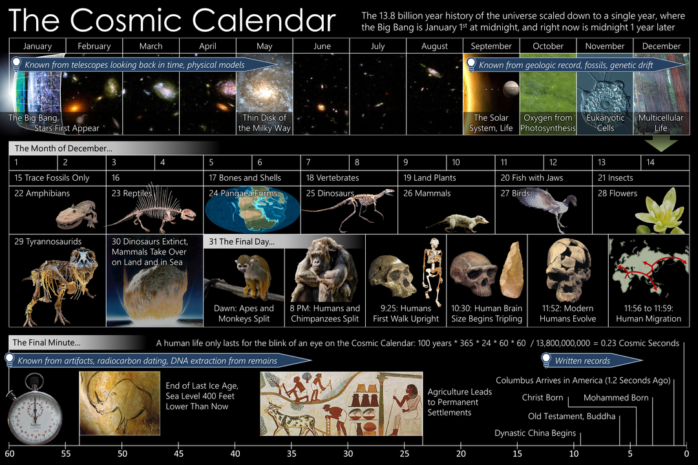

The Cosmic Calendar is a method to visualize the chronology of the universe, scaling its current age of 13.8 billion years to a single year in order to help intuit it for pedagogical purposes in science education or popular science. In this visualization,
the Big Bang took place at the beginning of January 1 at midnight, and the current moment maps onto the end of December 31 just before midnight. At this scale, there are 437.5 years per second, 1.575 million years per hour, and 37.8
million years per day. The concept was popularized by Carl Sagan in his book The Dragons of Eden (1977) and on his television series Cosmos. Sagan goes on to extend the comparison in terms of surface area, explaining that if the Cosmic
Calendar is scaled to the size of a football field, then "all of human history would occupy an area the size of [his] hand".
Cosmology
| Date | Billions of Years ago | Event |
|---|---|---|
| 1 Jan | 13.8 | Big Bang, as seen through cosmic background radiation |
| 14 Jan | 13.1 | Oldest known Gamma Ray Burst |
| 22 Jan | 12.85 | First galaxies form |
| 16 Mar | 11 | Milky Way Galaxy formed |
| 12 May | 8.8 | Milky Way Galaxy disk formed |
| 2 Sep | 4.57 | Formation of the Solar System |
| 6 Sep | 4.4 | Oldest rocks known on Earth |
Evolution of Life
| Date | Billions of Years ago | Event |
|---|---|---|
| 14 Sep | 4.1 | First known "remains of biotic life" found in 4.1 billion-year-old rocks in Western Australia. |
| 21 Sep | 3.8 | First Life (Prokaryotes) |
| 30 Sep | 3.4 | Photosynthesis |
| 29 Oct | 2.4 | Oxygenation of Atmosphere |
| 9 Nov | 2 | Complex Cells (Eukaryotes) |
| 5 Dec | 0.8 | First Multicellular Life |
| 7 Dec | 0.67 | Simple Animals |
| 14 Dec | 0.55 | Arthropods (ancestors of insects, arachnids) |
| 17 Dec | 0.5 | Fish and Proto-amphibians |
| 20 Dec | 0.45 | Land Plants |
| 21 Dec | 0.4 | Insects and Seeds |
| 22 Dec | 0.36 | Amphibians |
| 23 Dec | 0.3 | Reptiles |
| 24 Dec | 0.25 | Permian-Triassic Extinction Event, 90% of Species Die Out |
| 25 Dec | 0.23 | Dinosaurs |
| 26 Dec | 0.2 | Mammals |
| 27 Dec | 0.15 | Birds |
| 28 Dec | 0.13 | Flowers |
| 30 Dec, 06:24 | 0.065 | Cretaceous–Paleogene extinction event, Non-avian Dinosaurs Die Out |
Human Evolution
| Date | Millions of Years ago | Event |
|---|---|---|
| 30 Dec | 65 | Primates |
| 31 Dec, 06:05 | 15 | Apes |
| 31 Dec, 14:24 | 12.3 | Hominids |
| 31 Dec, 22:24 | 2.5 | Primitive Humans and Stone Tools |
| 31 Dec, 23:44 | 0.4 | Domestication of Fire |
| 31 Dec, 23:52 | 0.2 | Anatomically Modern Humans |
| 31 Dec, 23:55 | 0.11 | Beginning of Most Recent Glacial Period |
| 31 Dec, 23:58 | 0.035 | Sculpture and Painting |
| 31 Dec, 23:59:32 | 0.012 | Agriculture |
History Begins
| Date | Thousands of Years ago | Event |
|---|---|---|
| 31 Dec, 23:59:33 | 12.0 | End of the Ice Age |
| 31 Dec, 23:59:41 | 8.3 | Flooding of Doggerland |
| 31 Dec, 23:59:46 | 6.0 | Chalcolithic |
| 31 Dec, 23:59:47 | 5.5 | Early Bronze Age; Proto-writing; Building of Stonehenge Cursus |
| 31 Dec, 23:59:48 | 5.0 | First Dynasty of Egypt, Early Dynastic Period in Sumer, Beginning of Indus Valley Civilisation |
| 31 Dec, 23:59:49 | 4.5 | Alphabet, Akkadian Empire, Wheel |
| 31 Dec, 23:59:51 | 4.0 | Code of Hammurabi, Middle Kingdom of Egypt |
| 31 Dec, 23:59:52 | 3.5 | Late Bronze Age to Early Iron Age; Minoan eruption |
| 31 Dec, 23:59:53 | 3.0 | Iron Age; Beginning of Classical Antiquity |
| 31 Dec, 23:59:54 | 2.5 | Buddha, Mahavira, Zoroaster, Confucius, Qin Dynasty, Classical Greece, Ashokan Empire, Vedas Completed, Euclidean geometry, Archimedean Physics, Roman Republic |
| 31 Dec, 23:59:55 | 2.0 | Ptolemaic astronomy, Roman Empire, Christ, Invention of Numeral 0, Gupta Empire |
| 31 Dec, 23:59:56 | 1.5 | Muhammad, Maya civilization, Song Dynasty, Rise of Byzantine Empire |
| 31 Dec, 23:59:58 | 1.0 | Mongol Empire, Maratha Empire, Crusades, Christopher Columbus Voyages to the Americas, Renaissance in Europe, Classical Music to the Time of Johann Sebastian Bach |
The Current Second
| Date | Thousands of Years ago | Event |
|---|---|---|
| 31 Dec, 23:59:59 | 0.5 | Modern History, the last 437.5 years before present. |